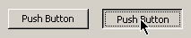
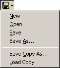
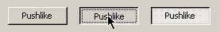

Buttons
Push Buttons
A push button issues some type of command to the program you are working in.
The most common push buttons are the "OK" and "Cancel" push buttons that
appear on dialog boxes. When you click "OK", it
tells the program that the information you filled in is correct and to go
ahead and process it.
A push button is a square area in a window with a label or a picture on it that
has different appearances in different programs, but the most basic model looks
like this:

It has a raised appearance (usually) so if you press and hold the mouse button
on a push button, it becomes depressed. When you release the mouse button, or
move the mouse pointer off of the push button, it becomes raised again.
If you push and release the mouse button while the mouse pointer is over a
push button, it will activate the push button's function, whatever it happens
to be. This is called "clicking" on the push button. Note that "clicking"
means both pressing and releasing the mouse button while the pointer is over
something.
If you push a push button down and you change your mind on performing the
function, you can simply drag the pointer off the push button before you
release the mouse button. The push button will become released without
executing the function, and you can then safely release the mouse button. This
technique works on just about any pushable thing in Windows, including menus,
check boxes, web links, etc..
You can also use the keyboard to activate a button. This is done by moving
the input focus to the button, which typically looks like a dotted rectangle,
and press the space bar to push the button.
I used a few buttons in the TX81Z Programmer, but some of them are actually
menu buttons or check boxes, which are each a little different.
Menu Buttons
A menu button looks like a push button, but instead of executing a command, it
just displays a menu. Selecting a menu item will
usually execute some type of command, though, just like a normal menu. This is
a control I created myself, but many programs use similar controls (on
toolbars, for example). Menu buttons have little down arrows on them.

There are two ways you can use the mouse on a menu button. You can either
click on the menu button then click on the menu item, or you can press the
mouse button down on the menu button, drag the pointer to the item you want,
and release the button to select the item. If you change your mind before you
release the button, just drag the pointer out of the menu and release the
button. You can then click somewhere outside of the menu to close it, like
on the menu button again.
Check Boxes
Check boxes are a type of button, but instead of executing a command when
clicked, they indicate to the program that you want to turn an option on or
off. The most basic check box looks like a check box on a paper form you
might fill out:

Not all check boxes look like the one above, though. Some of them look like
push buttons:

When you check one of these, it stays depressed and is drawn a little lighter
to show that it is checked.
I used a few of these pushlike check boxes in the program because they kind of
look better. I modified some of them slightly, though, so that the label
changes when they're depressed. I did this because some of the on/off options
on the TX81Z each have their own name, like mono mode and poly mode, so it
made sense to give both their own label.